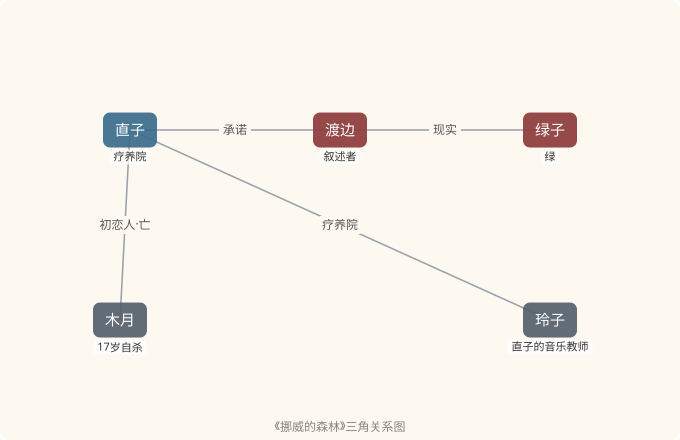

挪威的森林
一、基本信息
| 作者 | 村上春树 |
|---|---|
| 成书/出版 | 1987年出版（Britannica） Haruki Murakami — Encyclopaedia Britannica（百科全书） |
| 国别/地区 | 日本 |
| 时代 | 现当代 · 20世纪 |
| 体裁 | 长篇小说 |
| 语言 | 日语 |

《挪威的森林》三角关系图（人物关系图）
二、创作背景
Britannica：Norwegian Wood (1987)—— Beatles 歌名为题（'Norwegian Wood (This Bird Has Flown)'——通说待核）——'现实主义'青春小说（非超现实——Britannica 语境）。
销量：日本千万册（通说待核）——'从消遣到经典'（Britannica：Ōe Kenzaburō初斥为纯娱乐——B169）。
三、内容脉络
37岁的渡边在汉堡机场听到《挪威的森林》——回忆1960s：直子（木月前女友，疗养院）、绿子（活泼的同伴）之间的青春与死（通说）。
结局：直子自杀；渡边'在哪里也不知道的某个地方呼唤着直子'（结尾原文意，通说待核）。
四、主要人物表
| 人物 | 身份 | 说明 |
|---|---|---|
| 渡边 | 大学生 | '叙述者'——'I'的第一人称 |
| 直子 | 木月前女友 | '精神疾病'的少女——死亡 |
| 绿子 | '现实'的恋人 | |
| 木月 | 17岁自杀 | '青春之死'的起点 |
五、主题与艺术特点
- 青春与死：'死不是生的对立，而是作为生的一部分永存'（原文意，公有领域）。
- '现实'爱情：非超现实的'现实主义'（Britannica 语境：区别于奇鸟行状录等——通说待核）。
- 艺术特点：Beatles 歌曲、回忆叙事、'抒情'与'冷淡'并存。
六、影响与评论
- Britannica（Murakami 条）：Norwegian Wood (1987)——'best-known'（通说待核）。
Haruki Murakami — Encyclopaedia Britannica（百科全书） - 东亚'村上热'（通说待核）——林少华译本（通说待核）。
Haruki Murakami — Encyclopaedia Britannica（百科全书）
七、阅读建议
难点
- 青春爱情的'现实感'——区别于村上其他作品。
- '死'的主题——理解'生的一部分永存'。
- 林少华译《挪威的森林》（上海译文出版社，通说待核）。
- 英译：Jay Rubin（通说待核）。
通读 → 精读'直子'与'绿子'两段 → 对照《海边的卡夫卡》看村上的超现实/现实两轨。
八、待核实
- 1987年讲谈社出版（上下册）细节待核。
- 林少华译本信息待核。
- Jay Rubin 英译（1997/2000）待核。
- 销量（千万册说）待核。
本页主要来源
村上春树的其他收录作品：挪威的森林